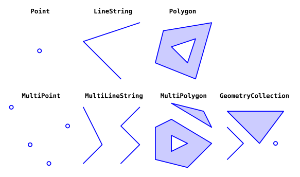

🔹 Sesión 2#
En esta sesión trabajaremos con la biblioteca shapely, que nos permite realizar operaciones geométricas y espaciales en Python. Aprenderemos a crear, manipular y analizar geometrías, así como a realizar operaciones espaciales como la intersección, la unión y la diferencia entre geometrías.
Introducción#
En el capítulo anterior cubrimos los fundamentos de trabajar con Python. Ahora pasaremos al tema principal de este curso: trabajar con datos geoespaciales.
Los datos geoespaciales se pueden dividir en dos categorías principales:
Capas de datos vectoriales
Capas de datos ráster
En los próximos tres capítulos, abordaremos los fundamentos de trabajar con el primer tipo, las capas vectoriales, en Python. En esta sesión cubrimos el paquete shapely, que se utiliza para representar y trabajar con geometrías vectoriales individuales.
Las geometrías individuales dentro de una capa vectorial se almacenan como geometrías de shapely. Así que es importante familiarizarse con este paquete antes de pasar a trabajar con capas vectoriales completas.

Recuperado de: Dorman, M. (2025). Geometries (Shapely). En Spatial Data Programming with Python.
¿Qué es una geometría individual?
Una geometría individual es una representación única de una forma geométrica, definida según los tipos establecidos en la especificación Simple Features. Esta especificación contempla al menos 17 tipos de geometrías, aunque en la práctica se utilizan comúnmente solo 7. Estas son:
Point: un punto en el espacio (bidimensional o tridimensional).LineString: una línea compuesta por una secuencia de puntos conectados.Polygon: un área cerrada delimitada por una secuencia de puntos (puede incluir huecos).MultiPoint: un conjunto de puntos.MultiLineString: un conjunto de líneas (LineString).MultiPolygon: un conjunto de polígonos.GeometryCollection: una colección que puede incluir cualquier combinación de los tipos anteriores.
Una forma común de representar estas geometrías es mediante el formato WKT (Well-Known Text), un lenguaje de marcado en texto plano que describe el tipo de geometría y sus coordenadas.
Por ejemplo:
Tipo |
Ejemplo WKT |
|---|---|
|
|
|
|
|
|
|
|
|
|
|
|
|
|
Recuperado de: Wikipedia. (2025). Well-known text representation of geometry objects. En Wikipedia.
🛈 WKT es ampliamente utilizado en bibliotecas como
shapelyy bases de datos espaciales como PostGIS, pero no es la única forma de representar geometrías.
Otros formatos comunes para representar geometrías:#
WKB (Well-Known Binary): versión binaria de WKT, más eficiente para almacenamiento y procesamiento computacional.
GeoJSON: basado en JSON, ideal para aplicaciones web y APIs.
Shapefile (.shp): formato binario tradicional muy usado en software SIG como QGIS.
GML / KML: formatos XML utilizados en entornos interoperables o visualización (como Google Earth).
Cada uno de estos formatos tiene ventajas según el contexto de uso: análisis, visualización, almacenamiento o intercambio entre herramientas.
Shapely#
shapely es una biblioteca de Python para trabajar con geometrías vectoriales, es decir, el componente geométrico de las capas vectoriales (el otro componente son los atributos no espaciales).
shapely es una interfaz de Python para la biblioteca de geometría GEOS (Geometry Engine - Open Source), que es una biblioteca de C++. GEOS es la biblioteca de geometría subyacente utilizada por muchos sistemas de información geográfica (SIG) de código abierto y bibliotecas de análisis espacial, como PostGIS, GDAL, GeoPandas, QGIS, entre otros.
La documentación de shapely es muy completa y contiene ejemplos de uso.
Contenidos de esta sesión#
En esta sesión estaremos trabajando con este cuaderno de trabajo:

Al finalizar el taller, tienes disponible un cuaderno para practicar lo aprendido: